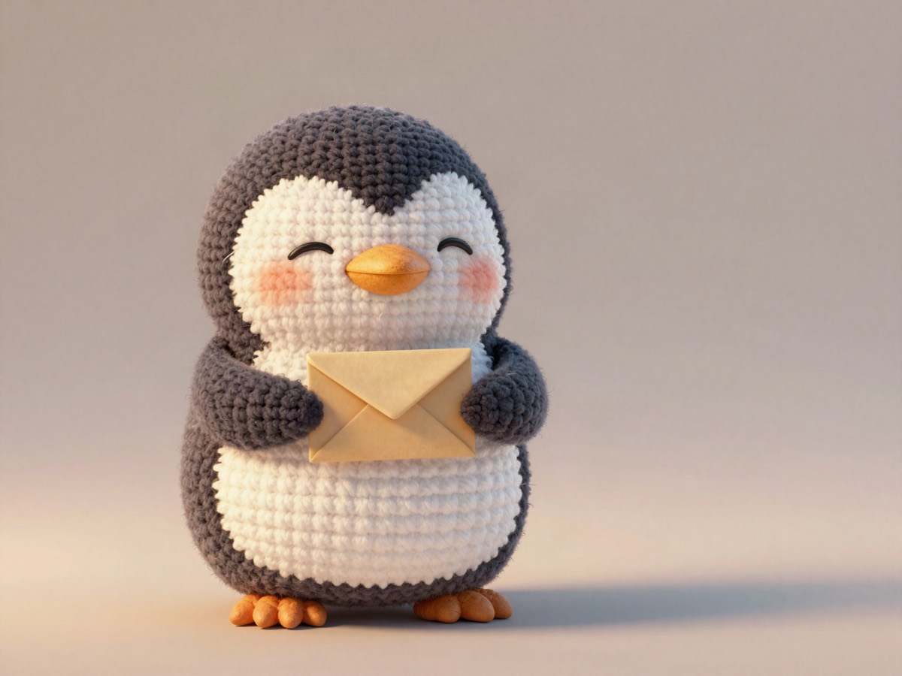

The 3 moments that made me happiest as a bridge engineer 🐧

Let me tell you about the happiest moments I had at work 🐧 While working as a bridge engineer, there were about 3 moments that made me happy.
When the project ended, an email came from the client.
"Thank you for your accurate and trustworthy management." "We'd love to work with you again next time."
When I read it, I almost cried.
I can still say it word for word. I even remember what was written in the second half of the email.
In every single meeting I had worried whether things were actually getting through, so that email kept working on me for a long time.
To facilitate a meeting of about 1 hour, I prepare quite a lot.
Before the meeting, I get very worried, like, can I talk well, can I explain well, is anything missing or repeated?
I go into the meeting with that worry, and when in the end we have a useful meeting, I am happy. There is a feeling of release, like, oh good, I did it, I said it.
Even after the meeting ends, if I sit still at my desk, the excitement does not stop, so I often went shopping at the 7-Eleven nearby, or looked up at the clear blue sky of Cebu, and felt refreshed.
As a bridge engineer, I ask the local engineers to do work, like, please do this.
When I asked, and they listened honestly, or took on the work in a good mood, I was happy.
When what I said got through smoothly, and the engineers made a really nice result, I feel "thank you" so much that I really want to hug them, and my brain juice flows.
Oh good, it really got through. It is the moment I feel relieved.